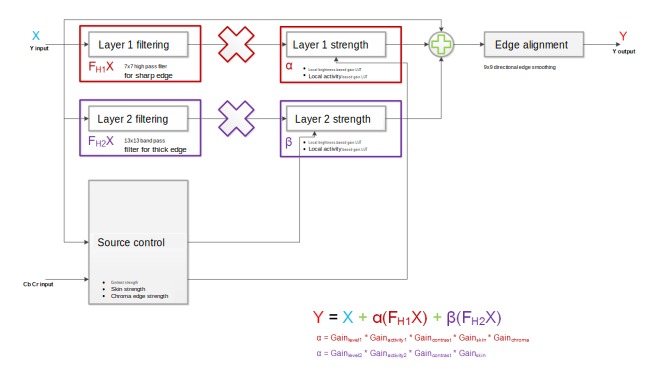
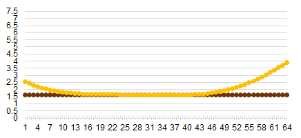
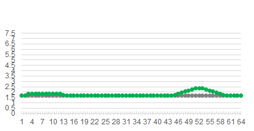
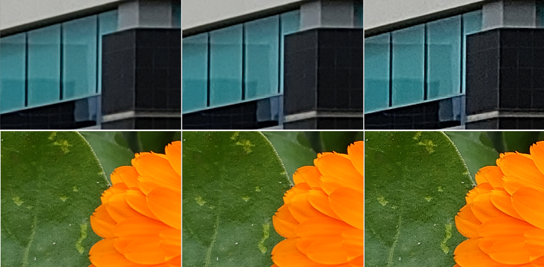
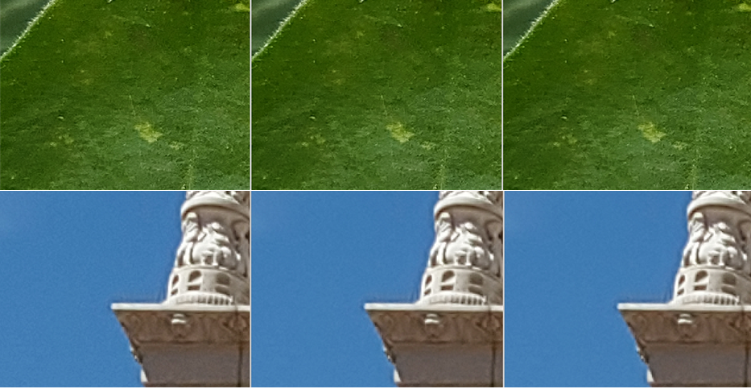
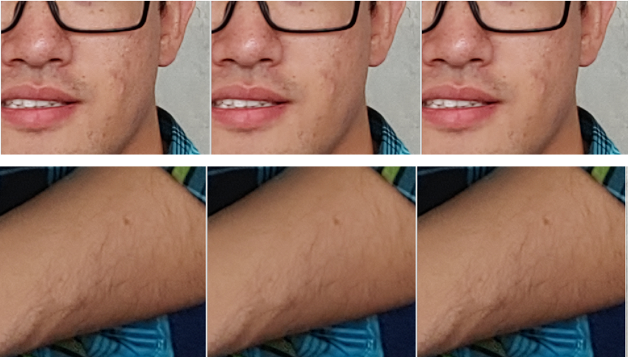
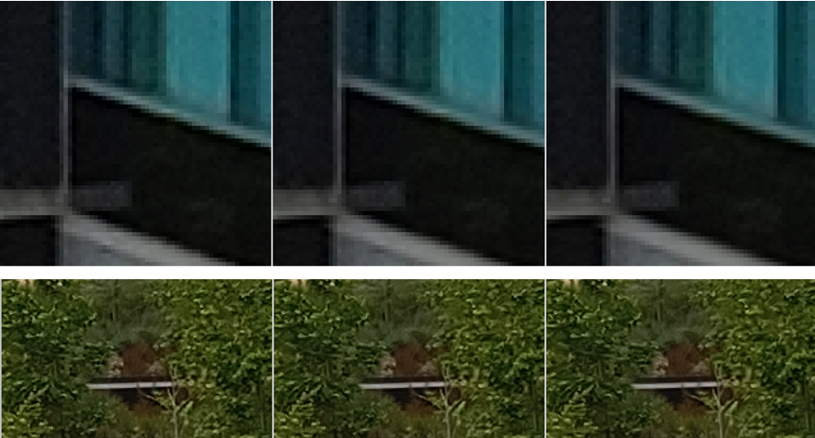
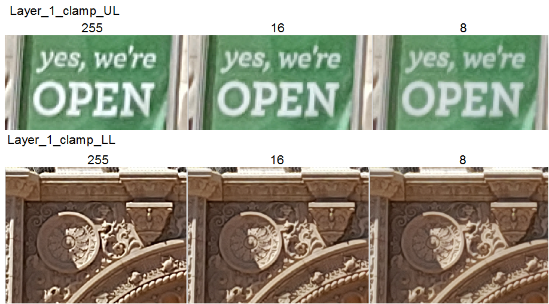
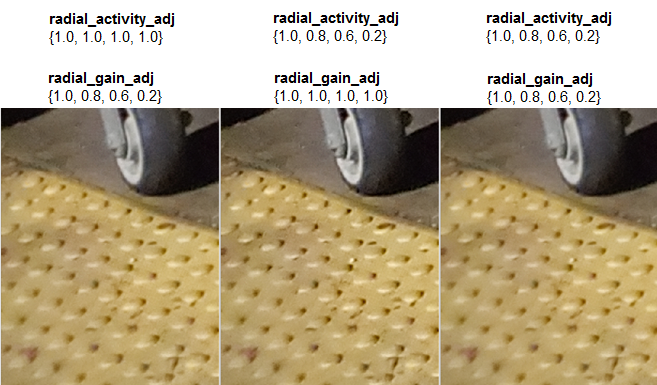
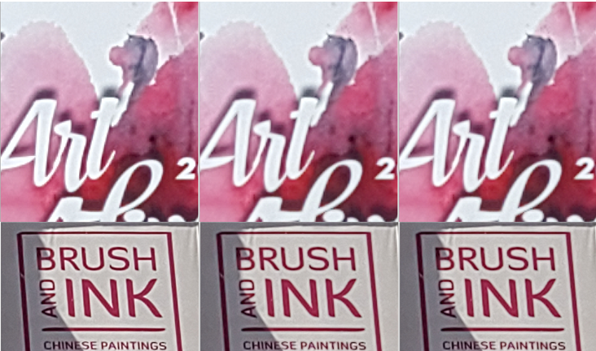

Edge enhancement increases the local contrast at boundaries which makes the image appear sharper. The ASF block in the CPP hardware uses high-pass filters to enhance the edges. Smoothing can be applied to nontexture regions to suppress noise.
The ASF module is located in PPS of IPE and should be tuned last.

Sharpening gain is calculated by combining sharpening strength based on local brightness and local activity. Sharpening gain is controlled by three LUTs per layer: layer_1_gain_positive_lut, layer_1_gain_negative_lut, and layer_1_gain_weight_lut. For layer 2, the LUTs are layer_2_gain_positive_lut, layer_2_gain_negative_lut, and layer_2_gain_weight_lut.
Strength reduction
Strength reduction is controlled by four parameters: gain_contrast_negative, gain_contrast_positive, skingain, and skinactivity. These parameters adjust the contrast strength, skin strength, and chroma edge strength.
Symmetric kernel
| Parameter name | Description | Tuning | Default | Must tune? |
|---|---|---|---|---|
| layer_1_hpf_symmetric_coeff | This controls the first layer 7x7 sharpening coefficients.
The thin kernel shows small details and makes the image sharper.
The thick kernel smooths edges. The sum of the kernel should be
zero. It is not recommended to change the kernel
manually. Length: 10; Q10 |
|
Use defaults |
gain_positive/negative_lut
Thses LUTs affect sharpness in the output image where the positive gain LUT affects white or lighter edges and the negative gain LUT affects black or darker edges. Larger values increase sharpness in busy areas of the image. Positive and negative gain LUTs are calculated by:
Level = Y intensity value/4
| Parameter name | Description | Tuning | Default | Must tune? |
|---|---|---|---|---|
| layer_1_gain_positive_lut[level] | Level-based sharpening gain LUT for positive halo Length: 64 |
Higher value = stronger sharpening | All 1.65f Min: 0.0f; Max: 7.9f |
Use defaults |
| layer_1_gain_negative_lut[level] | Level-based sharpening gain LUT for negative halo Length: 64 |
Higher value = stronger sharpening | All 1.65f Min: 0.0f; Max: 7.9f |
Use defaults |
| layer_1_gain_weight_lut[activity] | Normalized activity-based sharpening gain LUT Length: 64 |
Higher value = stronger sharpening | From 0.5 to 1.0 Min: 0.0f; Max: 0.996f |
Use defaults |
For bright or normal light, there is a U-shaped curve with a
stronger enhancement for highlights and shadows (see orange line below). For low
light, there is a flat curve with the same enhancement for all intensity levels and
the default is all 0.6f (see brown line below).

For manual curve tuning, obtain the level data (Y intensity) for the section that
requires enhancement, or release sharpening and tune the level manually.

Increasing gain LUTs increases sharpness but also increases noise.

U-shape generates stronger highlight sharpening and manual shape sharpening is similar.

activity_normalization_lut
This LUT is tuned to reduce noise in dark areas of the image. Activity is calculated by:
Activity = Local variation/4
The activity is normalized 5x5 BPF and LPF input. It can be adjusted with the following parameters.
| Change to perform | Parameter to adjust |
|---|---|
| BPF | layer_1_activity_band_pass_coeff |
| Scale | layer_1_norm_scale and layer_1_L2_norm_en |
| Clamp | layer_1_activity_clamp_threshold |
| Normalization | layer_1_activity_normalization_lut |

Using smaller normalization values decreases the normalized activity factor, which in turn provides dark noise suppression but also creates less contrast on dark edge areas. Avoid using values close to zero for this LUT.
Layer 2 kernel and LUTs
| Parameter name | Description | Tuning | Default | Must tune? |
|---|---|---|---|---|
| Layer 2 kernel | ||||
| layer_2_hpf_sharpening_coeff | This parameter controls the second layer sharpening
coefficients. The sum of the kernel should be zero. It is not
recommended to change the kernel manually. Length: 6; Q10 |
5x5 kernel on x2 downscaled image and 2x upsampled | -1, -4, -6, -16, -24, 220 | Use defaults |
| Layer 2 LUTs | ||||
| layer_2_gain_positive_lut[level] | Level-based sharpening gain LUT for positive halo. This can
be the same as layer 1. Length: 64 |
Higher value = stronger sharpening | All 1.65f Min: 0.0f; Max: 7.9f |
Use defaults |
| layer_2_gain_negative_lut[level] | Level-based sharpening gain LUT for negative halo. This can
be the same as layer 1. Length: 64 |
Higher value = stronger sharpening | All 1.65f Min: 0.0f; Max: 7.9f |
Use defaults |
| layer_2_gain_weight_lut[activity] | Normalized activity-based sharpening gain LUT. This can be
the same as layer 1. Length: 64 |
Higher value = stronger sharpening | All 1.65f Min: 0.0f; Max: 0.996f |
Use defaults |
In the following example, layer 1 and layer 2 gain LUT parameters are the same, but the effects are different.
Gain and skin LUTs
| Parameter name | Description | Tuning | Default | Must tune? |
|---|---|---|---|---|
| gain_contrast_positive[contrast] | Contrast-based sharpening gain LUT. The strength is based on
contrast and a value of 1 bypasses the effects. Length: 32 |
Higher value = stronger sharpening | From 1.0 to 0.25 Min: 0.004f; Max: 1.0f |
Use defaults |
| gain_contrast negative[contrast] | Contrast-based sharpening gain LUT. The strength is based on
contrast and a value of 1 bypasses the effects. Length: 32 |
Higher value = stronger sharpening | From 1.0 to 0.25 Min: 0.004f; Max: 1.0f |
Use defaults |
| skingain | Skin color based sharpening gain LUT. Length: 17 |
Higher value = stronger sharpening | From 1.0 to 0.76 Min: 0.004f; Max: 1.0f |
Use defaults |
| skinactivity | Skin color based sharpening gain activity LUT. Length: 17 |
Higher value = stronger sharpening | From 1.0 to 0.5 Min: 0.004f; Max: 1.0f |
Use defaults |
The contrast value for gain_contrast_positive is calculated using:
Contrast = Y min max diff/4
Define the areas that may have halos and reduce the contrast strength to remove them. Typically, a positive halo appears worse than a negative halo.
For skin gain, define the skin color and face area and reduce the gain strength on the face. Face areas can be smoothed with FD information, which is set via the face_boundary and face_transition parameters.
For skin activity, the activity strength is based on skin color. Define the skin color and face area and reduce the activity data on the face. Face areas can be smoothed with FD information, which is set via the face_boundary and face_transition parameters.

Smoothing
| Parameter name | Description | Tuning | Default | Must tune? |
|---|---|---|---|---|
| smoothing_strength | The blending factor between original pixel and the
edge-smoothed pixel. Length: 1 |
Higher value = stronger sharpening | 0.5f Min: 0.0f; Max: 0.999f |
Use defaults |
If the output image edges are not clean or have a checkered-like effect, use the smoothing_strength parameter to blend the edges of pixels. The edge is smoothed by direction (horizontal, diagonal, ect.). If an edge is not detected by other parameters, this parameter will not work.
The following images show coarse edges that are aligned without reducing the texture. Details are not affected by edge alignment.

Clamps
Clamping parameters help correct the overshooting that can occur in edge sharpening.
| Parameter name | Description | Tuning | Default | Must tune? |
|---|---|---|---|---|
| layer_1_clamp_UL layer_2_clamp_UL |
Manual fixed positive clamping-level sharpening Length: 1 |
Higher value = stronger sharpening | 255 Min: 0; Max: 255 |
Yes |
| layer_1_clamp_LL layer_2_clamp_LL |
Manual fixed negative clamping-level sharpening Length: 1 |
Higher value = weaker sharpening | -255 Min: -255; Max: 0 |
Yes |
It is recommended to use halo control parameters over clamps where possible.
Tighter clamps, values with a smaller absolute value, should be used in the final steps of ASF tuning. These tighter clamp values can reduce halo effects, which typically occur in normal to low lighting conditions.
The following example shows the effects of two different clamp
values.

Radial adjustments
| Parameter name | Description | Tuning | Default | Must tune? |
|---|---|---|---|---|
| radial_activity_adj | The correction factor for activity based on
radial distance. Length: 4 |
Higher value = stronger sharpening | From 1.0 to 0.6 Min: 0.0f; Max: 7.96f |
Yes |
| radial_gain_adj | The correction factor for gain based on
radial distance. Length: 4 |
Higher value = weaker sharpening | From 1.0 to 1.0 Min: 0.0f; Max: 7.96f |
Yes |
Apply the radial_activity_adj parameter to activity and the radial_gain_adj parameter to gain. Both parameters can be increased to enhance corner edges.

To preserve image corner details, use the radial_activity_adj parameter for radial processing.

Chroma edge
| Parameter name | Description | Tuning | Default | Must tune? |
|---|---|---|---|---|
| gain_chroma_positive[chroma_halo] gain_chroma_negative[chroma_halo] |
Contrast-based sharpening gain LUT Length: 32 |
Higher value = stronger sharpening | From 1.0 to 0.25 Min: 0.004f; Max: 1.00f |
Use defaults, but can be tuned to preference |

Edge alignment
Edge alignment can be adjusted with the smothing_strength parameter.
| Parameter name | Description | Tuning | Default | Must tune? |
|---|---|---|---|---|
| flat_threshold | Apply edge smoothing only when the maximum of each edge value
is larger or equal to the flat_threshold parameter value.
Increasing this threshold causes edges to not be detected so
edge smoothing will not work. Length: 1 |
Higher value = less edge detection and less smoothing | 8 Min: 0; Max: 255 |
Use defaults |
| similarity_threshold (corner_threshold) | The edge smoothing value is applied only when the maximum
value is greater or equal to the minimum value *
similarity_threshold. Length: 1 |
Higher value = less edge detection and less smoothing | 2 Min: 0; Max: 63.999f |
Use defaults |
| texture_threshold (max_smoothing_clamp) | Gray colors are not smoothed as they are considered texture.
The edge smoothing value change is clamped by
texture_threshold. Length: 1 |
Higher value = stronger smoothing | 8 Min: 0; Max: 255 |
Use defaults |
Parameters
| Parameter | If disabled |
|---|---|
| layer_1_enable | 1st layer is disabled |
| layer_2_enable | 2nd layer is disabled |
| radial_enable | No gain applied for radial location |
| contrast_enable | No gain applied for contrast |
| chroma_gradient_enable | No gain applied for chroma |
| skin_enable | No gain applied for skin |
| face_enable | No face detection data used for skin |
| edge_alignment_enable | No edges are smoothed |
- Set layer_1_clamp_UL/layer_2_clamp_UL to 0.
- Set layer_1_clamp_LL/layer_2_clamp_LL to 0.
- Set layer_1_sp to 0.
- Set smoothing_strength to 0.